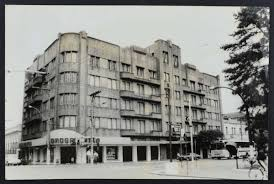
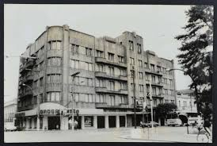

Edifício Cauduro
O Edifício Cauduro, mais conhecido como “antigo Hotel Jantzen”, está localizado na Avenida Rio Branco, centro histórico da cidade de Santa Maria, no Rio Grande do Sul. A edificação, Art Déco, de uso misto, comercial e hospedagem, construído entre 1939 e 1941, representa um momento de auge do crescimento econômico e urbano de uma cidade no interior do estado.
Av. Rio Branco, 893 - Centro, Santa Maria


 
